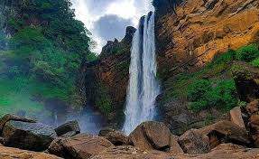
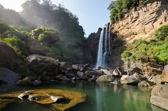
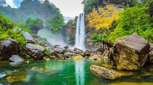

Laxapana Falls
 
Laxapana Falls is, at 126 m (413 ft) high, the 8th highest waterfall in Sri Lanka and 625th highest in the world.
It is situated in Maskeliya area in Nuwara Eliya District, about 16 km (9.9 mi)
from Maskeliya town on Maskeliya-Norton Bridge road, in a village called Kiriwan Eliya.
It is formed by Maskeliya Oya near the confluence of Kehelgamu Oya and Maskeliya Oya which forms Kelani River.
The falls gives its name to twin hydroelectric power stations,
Old Laxapana Power Station which generates 50 MW of electricity and New Laxapana Power Station which generates 100 MW.
Popular folklore tells this the place where Buddha mended his saffron robe when he was visiting Sri Pada.
The name of the Falls derived from Sinhala words of "Laxa" means Hundred thousand and "Pahana" or "Pashana" means rock.
 Location (Laxapana Falls)